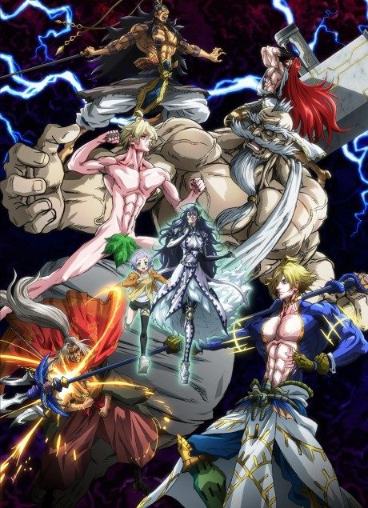

Anime
Manga
2021 · Action, Drama, Fantasy
Record of Ragnarok
終末のワルキューレ
AniList6.7
Animeter—
4 seasons42 ep
MangaUnclear
4 seasons, 42 episodes
In airing order. Episode numbers on this site count straight through every season, so season 2 starts at episode 13.
1
2021 · Web
Record of Ragnarok
Episodes1–1212 ep
2
2023 · Web
Record of Ragnarok II
Episodes13–2210 ep
3
2023 · Web
Record of Ragnarok II Part 2
Episodes23–275 ep
4
2025 · Web
Record of Ragnarok III
Episodes28–4215 ep
Sources: AniList